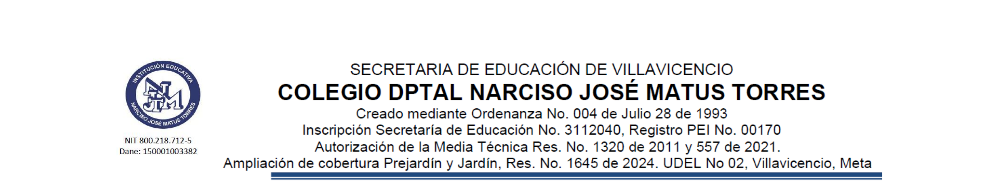

Generador institucional de solicitud y soporte en un único PDF.
Este apartado aplica a docentes. La propuesta se somete a revisión de Coordinación; las medidas institucionales corresponden a las autoridades competentes.